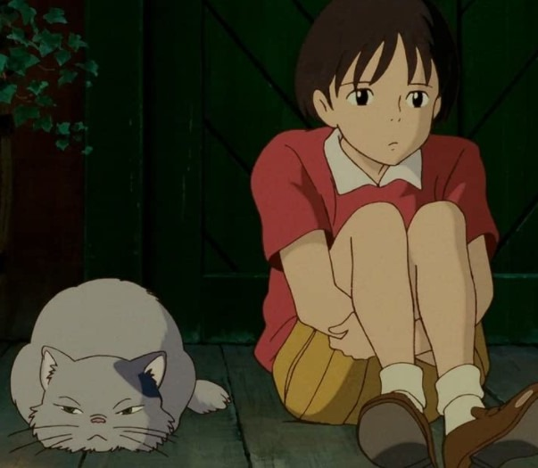
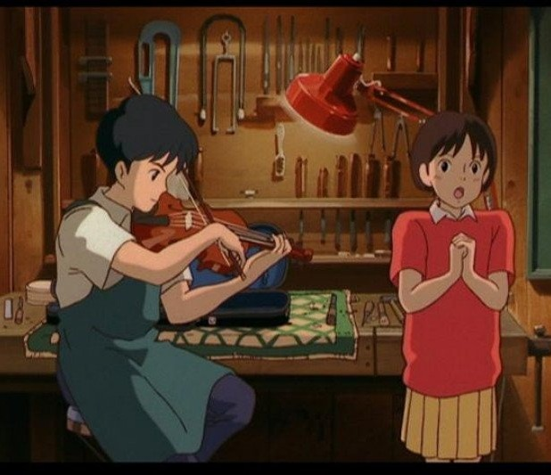

GHIBLI MOVIE Rilis: 12 September 2017
WHISPER OF THE HEART
Profile Movie
| Directed | Yoshifumi Kondo |
|---|---|
| Screenplay | Hayao Miyazaki |
| Produced | Toshio Suzuki |
| Production Company | Studio Ghibli |
| Based on | Mimi o Sumaseba by Aoi Hiiragi |
Movie Synopsis
Saat itu adalah libur musim panas terakhir Shizuku di bangku SMP. Sebagai seorang kutubuku yang sering mengunjungi perpustakaan, perjumpaannya dengan seekor kucing menuntunnya ke rumah Seiji Amasawa. Di situ, ia dikenalkan kepada kucing mistis yang mampu mengajarinya untuk melihat "permata tersembunyi" dalam hidup. Perjalanan Seiji dan Shizuku menuju kebahagiaan dipenuhi oleh berbagai macam tantangan yang harus dilewati. Ini adalah sebuah kisah menyentuh yang bercerita tentang bagaimana mereka mampu mengukir ruang kosong di hati masing-masing.
Trailer
 

List Movie Ghibli
| The Wind Rises | film tahun 2013 |
|---|---|
| from up on poppy hill | film tahun 2011 |
| Ariety | film tahun 2010 |
| the cat return | film tahun 2002 |
| castle in the sky | film tahun 1986 |